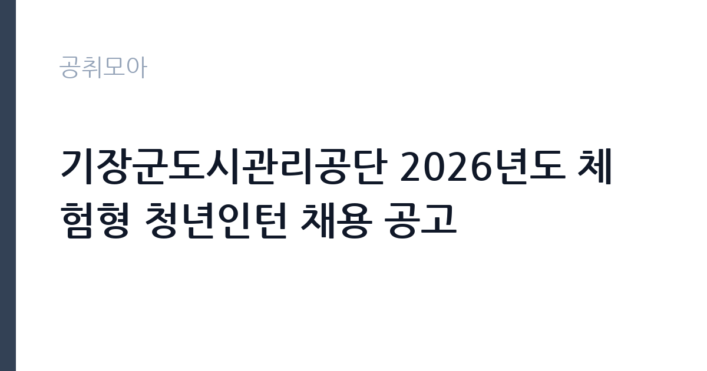

[공공기관] 기장군도시관리공단 2026년도 체험형 청년인턴 채용 공고
기장군도시관리공단 · 부산 · 마감 2026-10-08 (D-10) · 출처 나라일터

한눈에 보는 모집 조건
| 기관 | 기장군도시관리공단 |
|---|---|
| 공고명 | 기장군도시관리공단 2026년도 체험형 청년인턴 채용 공고 |
| 고용형태 | 청년인턴(체험형) |
| 근무지 | 부산 |
| 게시일 | 2026-09-28 |
| 마감일 | 2026-10-08 (D-10) |
지원자격, 이렇게 읽으세요
- 사원 11명
- 접수 ~2026-10-08 마감
- 세부 조건은 원문 공고문 확인
체험형 청년인턴은 청년 연령 요건(통상 만 19세 이상 34세 이하)을 충족해야 하며 세부 기준은 원문 공고문에서 확인하십시오. 학력과 전공 제한이 없는 경우가 많아 취업준비생과 졸업예정자가 노리기 좋습니다. 공단 채용의 특성상 기장군 거주자에게 가점이 있는지, 중복 참여 제한(기존 청년인턴 경험자 제외)이 있는지를 반드시 확인해야 합니다. 제출 서류는 이력서와 자기소개서 중심이며 증빙 부담이 적습니다.
이 공고의 포인트
이 공고의 매력은 11명이라는 모집 규모와 체험형이라는 낮은 진입 장벽입니다. 서류와 면접만으로 선발되며 직무 시험 부담이 없습니다. 기장군도시관리공단은 체육센터와 복지관, 청소년수련관 등 다양한 공영시설을 운영해 배치받는 시설에 따라 폭넓은 행정 실무를 경험할 수 있습니다. 공공기관 인턴 경력은 이후 공기업과 공무원 지원 시 자기소개서 소재가 되며, 근무 평가가 우수하면 정규직 지원 때 실무 이해도가 강점이 됩니다.
전형은 어떻게 진행되나
공고 기간은 9월 28일부터 10월 8일까지이며 실제 접수는 10월 1일부터 10월 8일까지입니다. 2차 전형인 면접은 10월 15일부터 10월 22일 사이 하루에 치러지며 시간과 장소는 개별 공지됩니다. 합격자 발표는 10월 26일로 안내돼 있습니다. 전형이 단순한 만큼 자기소개서 완성도와 면접 태도가 당락을 가릅니다. 자세한 내용은 공단 홈페이지 채용정보란의 첨부파일을 확인하십시오.
원문에서 확인한 전형 방식
기장군도시관리공단 공고 제2026-108호 기장군도시관리공단 2026년도 체험형 청년인턴 채용 공고 『군민이 신뢰하는 지속가능한 혁신공기업 기장군도시관리공단』과 함께할 역량 있는 인재를 모집합니다. ○ 공고기간 : 2026. 9. 28.(월) ~ 2026. 10. 8.(목) ○ 접수기간 : 2026. 10. 1.(목) ~ 2026. 10. 8.(목) ○ 모집인원 : 총 11명 ○ 자격요건 : 채용공고문 참고 ○ 2차전형(면접) ▷ 일 자 : 2026. 10. 15.(목) ~ 2026. 10. 22(목) / 해당기간 중 1일 ▷ 장 소 : 시간 및 추후 개별공지 ○ 합격자발표 : 2025. 10. 26.(월) ○ 근무일 : 공고문 참고 ※ 자세한 공고내용은 첨부파일을 참조하시기 바랍니다. 2026년 9월 28일 기장군도시관리공단 이사장
이런 분께 추천해요
- 공공기관 첫 경력을 만들려는 청년 구직자에게 맞습니다. 11명 모집이라 기회가 넓습니다.
- 부산 기장군 거주자로 통근이 가능한 분께 권합니다. 지역 공기업 근무가 정주 계획과 맞으면 좋습니다.
- 면접 한 번으로 승부하려는 분께 유리합니다. 필기시험 없이 서류와 면접으로만 선발합니다.
지원 전 체크리스트
- 연령 요건과 거주지 요건을 원문에서 확인했습니다. 청년인턴은 연령 기준일이 합격과 탈락을 가릅니다.
- 기존 청년인턴 참여 이력이 지원 제한 사유인지 확인했습니다. 중복 참여 제한이 있는 공고가 많습니다.
- 접수 기간(10월 1일~8일)과 제출 서류를 확인했습니다. 자기소개서 문항을 미리 받아 초안을 써 두십시오.
- 면접 기간(10월 15일~22일) 일정을 비워 두었습니다. 하루 지정 면접이라 다른 일정과 겹치지 않게 하십시오.
모집 일정과 제출 타이밍
접수는 10월 1일부터 시작되므로 9월 말까지 자기소개서를 완성해 두십시오. 마감은 10월 8일이며 면접은 10월 15일부터 22일 사이 하루입니다. 합격자 발표는 10월 26일로 안내돼 있습니다. 일정이 여유 있어 보이지만 추석 연휴와 겹칠 수 있으니 접수 시작일인 10월 1일에 제출하는 것이 안전합니다. 면접 준비는 공단 시설과 사업 이해 중심으로 하십시오.
직무 이해하기: 공공기관
기장군도시관리공단은 체육시설과 복지관, 청소년수련관과 문화예절학교, 공영주차장과 재활용선별장 등 기장군의 공영시설을 운영하는 지방공기업입니다. 체험형 청년인턴은 배치 부서의 행정 보조와 민원 응대, 시설 운영 지원과 행사 보조를 맡게 됩니다. 공단 직원의 지도 아래 실무를 배우는 자리라 전문 직무보다는 행정 전반의 체험에 가깝습니다. 공기업의 예산과 회계, 민원 처리 흐름을 가까이서 볼 수 있는 것이 가장 큰 배움입니다.
자기소개서 작성 팁
체험형 인턴 자기소개서는 거창한 포부보다 배우려는 자세와 성실함이 핵심입니다. 공단 시설 중 관심 있는 곳을 하나 짚고 그 이유를 구체적으로 쓰십시오. 아르바이트나 봉사활동에서 민원 응대와 팀워크를 보여준 경험을 포함하면 좋습니다. 기장군과의 인연(거주·학업·활동)이 있다면 분명히 쓰십시오. 근무 후 계획(정규직 지원·직무 탐색)을 솔직하게 밝히는 것도 좋습니다.
면접 준비 포인트
면접에서는 지원 동기와 공단에 대한 이해를 묻는 질문이 중심입니다. 공단이 운영하는 시설 세 곳 이상을 말할 수 있도록 홈페이지에서 미리 파악하십시오. 민원인 응대 상황 질문에는 친절과 원칙 준수를 균형 있게 답변하십시오. 단기 근무에 대한 성실 근무 의지와 출퇴근 계획을 묻는다면 구체적으로 답하십시오. 밝은 태도와 또렷한 발음이 체험형 면접의 기본 평가 요소입니다.
급여·근무조건 읽는 법
정확한 보수는 원문 공고문의 첨부파일에서 확인하셔야 합니다. 체험형 청년인턴의 보수는 통상 월급제로 지급되며 4대보험이 적용되는 경우가 많습니다. 2026년 최저임금 수준과 공단 내규에 따라 정해지므로 공고문 금액이 최종 기준입니다. 교통비와 식비 지원 여부도 공고문에서 확인하십시오. 출처가 확인되지 않은 금액을 전제로 삼지 마시고 반드시 공단 홈페이지의 공고문을 열어보시기 바랍니다.
자주 묻는 질문
- 체험형 인턴은 정규직 전환이 되나요?
체험형 청년인턴은 고용 기간이 정해진 체험 자리로 자동 전환되지는 않습니다. 다만 공기업 실무 경험과 근무 평가가 이후 정규직 지원 때 강점이 됩니다. - 어디에서 근무하나요?
기장군도시관리공단이 운영하는 체육시설과 복지관, 청소년수련관 등 공영시설 중 한 곳에 배치됩니다. 배치 부서는 합격 후 정해집니다. - 접수는 언제부터인가요?
공고 기간은 9월 28일부터지만 실제 원서 접수는 10월 1일부터 10월 8일까지입니다. 공고문 첨부파일의 제출 서류를 미리 준비하십시오.
함께 보면 좋은 공고
[공공기관] 한전KPS(주)강원충북전력지사 단기노무원(강릉지점 차량순시) 채용공고(31차) — 마감 2026-10-01[공공기관] 한국폴리텍대학 광명융합기술교육원 대학운영직(경비원) 채용 공고 — 마감 2026-10-06[공공기관] (재)강원역사문화연구원 2026년 정규직 채용 공고 — 마감 2026-10-09출처: 나라일터 공개정보를 바탕으로 공취모아가 정리한 안내글입니다. 모집 조건·일정은 변경될 수 있으니 지원 전 반드시 원문 공고문을 확인하세요. 본 글은 정보 제공용이며 합격을 보장하지 않습니다.